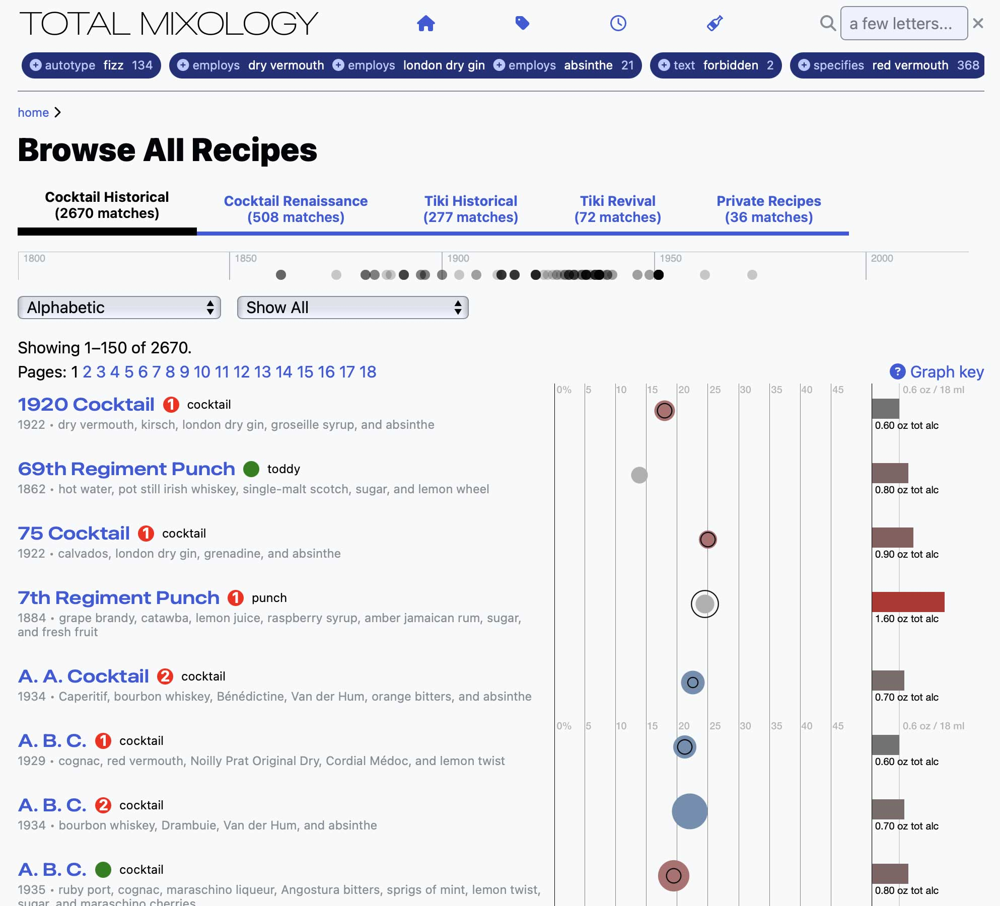
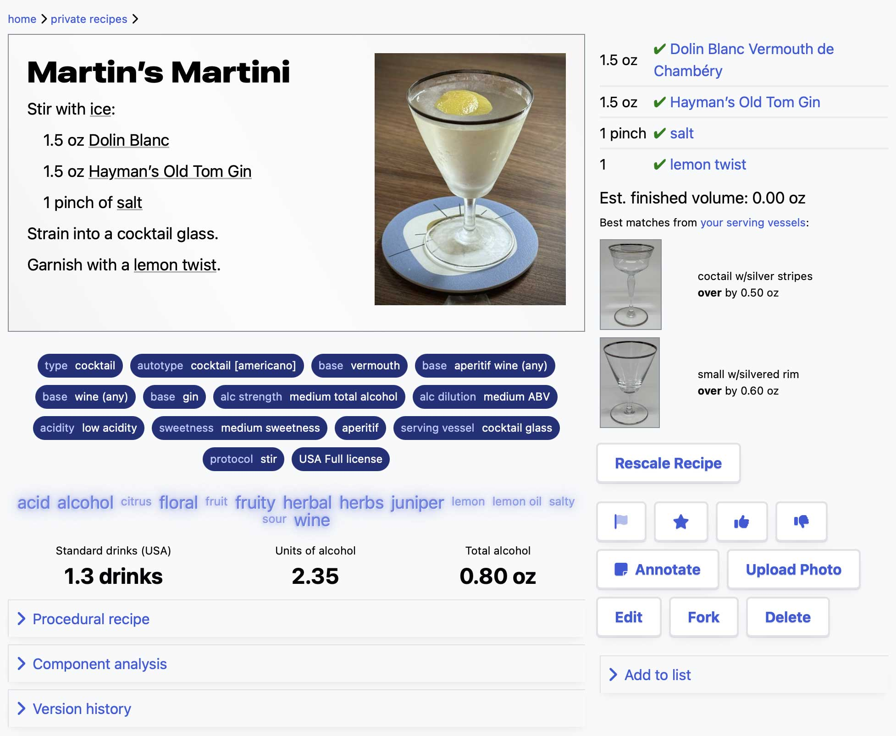

Next level database for mixed drinks
Free demo mode. Only US$18/quarter ($6/month) to subscribe!
All the recipes that matter
Without the noise. That’s what we’re shooting for, and we’re well on our way. Moreover, our recipe library isn’t just large, it’s great: curated, keyworded, analyzed, contextualized, annotated and cited!
If you know our popular apps like Martin’s Index, Total Tiki and Modern Classics, Total Mixology is like those “on steroids”. If you’re old enough to remember Cocktail DB, well, Total Mixology is sort of like Cocktail DB 3.0.
Meet your curators

Martin Doudoroff
Historical cocktails & customer support
Robert Simonson
Contemporary drinks
Jeff “Beachbum” Berry
Exotic drinks
Extra data rich
Expansive keywording, including people and places. Flavors. Graphs. There’s even an interactive map!
Your personal recipe database
It’s easy to bookmark recipes in lists for future reference, add your own annotations, and even add your own recipes and specs to your own private recipe book. Your private recipes aren’t just another notepad, either, they enjoy the full power of the database that makes our master recipe library so good.
Ingredient intelligence
Find drinks you can make with the ingredients you have, just like on our popular iPhone/iPad apps. But more: Manage separate inventories for different locations or one-off events. Organize your shopping list.
Level up
Drinks that properly fit your glassware are always more satisfying. We’ll do the math for you to rescale the recipe for the servings and serving size you need.
And when you want to get really serious about your house drinks, you can craft your own permanent private spec tailored to your preferred glassware and garnish, and even attach a photo for future reference.
Plan an event
Make a list of the drinks you want to serve and Total Mixology will tally up all the ingredients and quantities you’ll need. We’ll even generate a drink menu you can gussy up in your favorite word processor, as well as a cheat sheet for your own use at the bar.
Love and integrity
No advertisements, no “SEO”, no sponsors, no “engagement”, no emoting by random people, none of that crap. Instead, Total Mixology subscribers get personal support and a quality service that is cool like the Internet was gonna be, once upon a time.